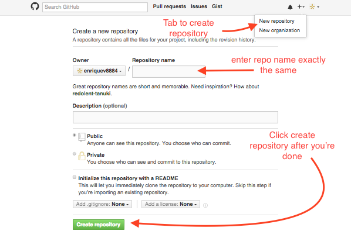

GitHub Tutorial
by Enrique Vivar
Git vs. GitHub
Git: Version control: Keeps "snapshots" of code
- Does not require Github
- Used to :
- edit files
- add files
- commit them
Github:
- stores code in a cloud (github.com)
- able to tracks changes
- easily collaborate on files
- requires git
- runs in the command line
Initial Setup
Once a github account is created, you would have to connect your account [cloud], to your terminal [C9]
- Create a c9 account
- Go to settings and click on SSH Keys
- Copy the SSH Key
- Head over to your Github.com account
- Go to settings
- Click on tab named SSH Keys
- Click on add SSH Keys
- Add a title, paste the SSH Key
- Save!
Once saved, you'll also need an identity for your work. With git config you will need to create a username and add an e-mail.
git config --global user.name
user.name being desired name
git config --global user.email
user.email is e-mail
With that you set your identity up, you're all good to go
Repository Setup
To start off, you will need to create a directory;
mkdir directory.name
directory.name being what you want
With your new directory you will have to cd into it;
cd directory.name
Within the directory, its recommended to create a README.md file;
touch README.md
Once the README.md is made, we can initialize it;
git init
Now that we have a repository, head to github.com and sign in.

- Copy SSH Key and head back c9
- Type
git remote add origin SSH Key(SSH Key being the one you copied) - Then enter
git push -u origin master - Now you're ready to work
Workflow & Commands
-
mkdir directory.namecreates directory -
cdused to go in or out of repositories -
git initmakes directory into a repository -
git helpused to explain commands -
git statusto see what files are ready to be commited -
git diffsee difference between current code and previous commit -
git addadds new or changed files -
git commit -mprepares files to get pushed -
git pushsends commits to remote repo -
git pullany changes on remote repo are brought down